Peliculas

videojuegos
Animes
Series
C++El dominio que cuneto en C++ es bueno, sin embargo todavia quedan varias cosas de las cuales se pueden mejorar, en escala porcentual evaluo que mis habilidades en este lenguaje es de 75% aproximandamente, es el lenguaje que más e usado desde que empece la universidad. 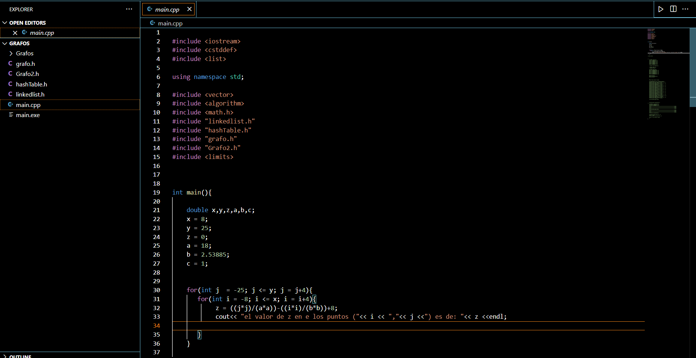 |
PythonEl dominio que poseeo en el lenguaje de Python no es bueno, pero tampoco malo, ya que casi no e usado Python en los ultimos 2 semestres, asi que evaluo que mis habilidades en este lenguaje deben de ser del 50%, por la falta de practica no e mejorado más allá de esto. 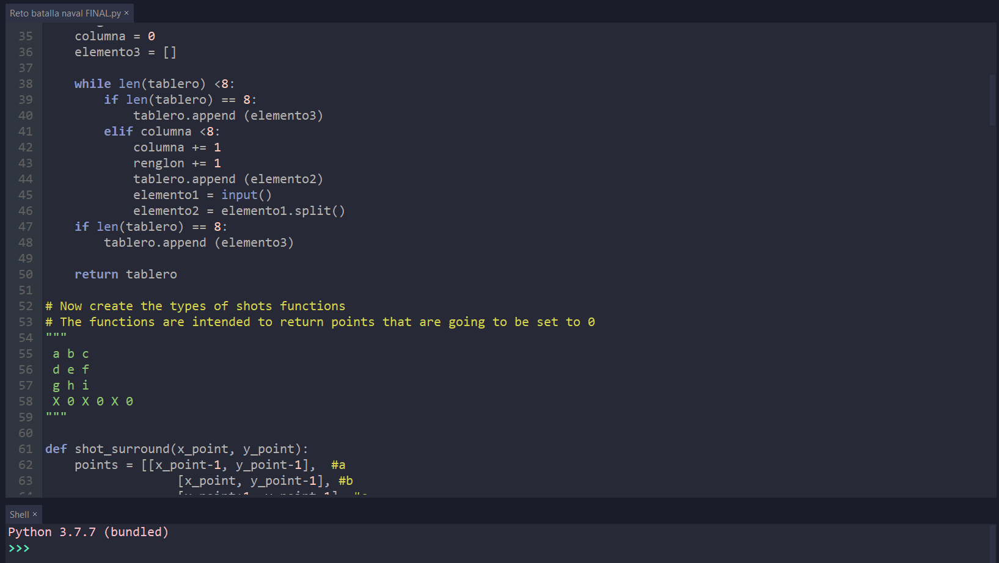 |
MatLabEl dominio de este lenguaje es bastante bueno, este es el 2do que más e usado y a pesar de que hace tiempo que no e practicado mis conocimientos siguen intactos, mi nivel en este lenguaje es de 70%, es un lenguajes bastante bueno y super util a la hora de programar problemas matematicos y fisicos 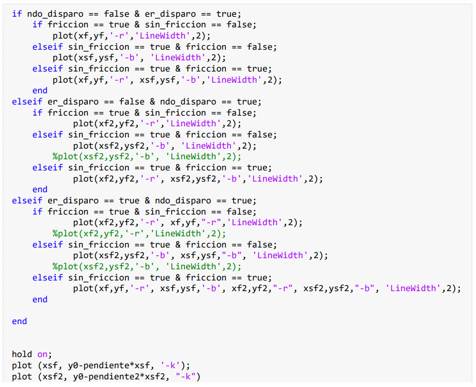 |
Juego de batalla naval en PythonEn la realizacion de este problema, se creo una simulación en el lenguaje de Python, donde el jugador puede escoger entre 2 modods de juego, uno automatico y otro interactivo, en el modo interactivo el sistema creaba un mapa de manera aleatorea con los barcos ya establecidos, lo unico que hace el jugador es disparar a estos con varios tiros eliminandolos, el segundo que es el automatico, en el cual el jugador coloca los barcos en el tablero de 8x8 para que despueste este u otro los derrive todos. Este codigo fue realizado aproximandamente el 16 de Octubre del 2020 Las siguientes capturas muestran un poco del codigo y los resultados de este. |
| 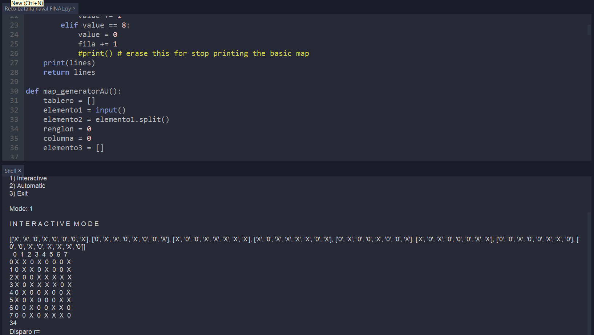 | 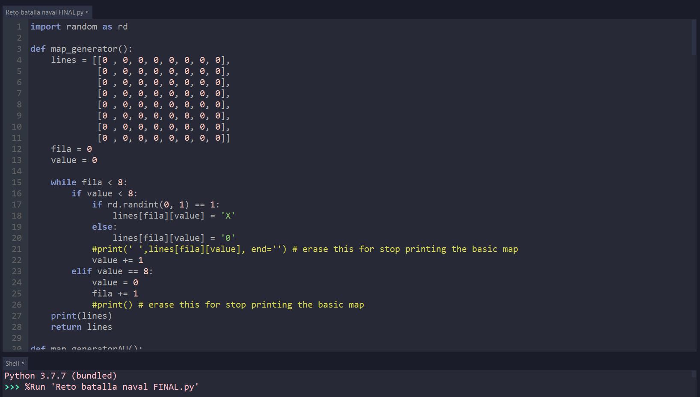 | 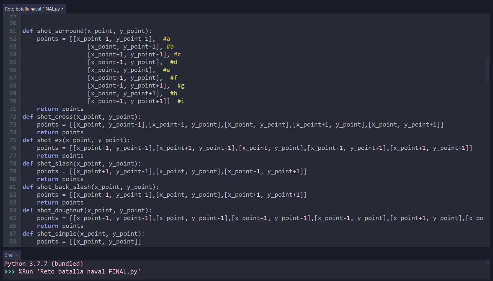 |
Pista de carreras de formula unoEste trabajo consto de diseñar una pequeña parte de una pista de formula uno, teniendo varias cosas que considerar, la primera y más importatne los puntos de inflexiones y los extremos, el radio de la curva en cada momento, ya que con este logramos calcular la velocidad maxima con el que este podria recorrer esa curva, y en caso de que sobrepase ese valor que tanta distancia decorre, con este dato lograr colocar las gradas en un lugar seguro para que los expecctadores no resulten heridos por un accidente. Este programa fue diseñado alrededor 29 de noviembre del 2020 Las siguientes capturas muestar algunas partes del codigo junto con un pequeño mapa de la pista. |
| 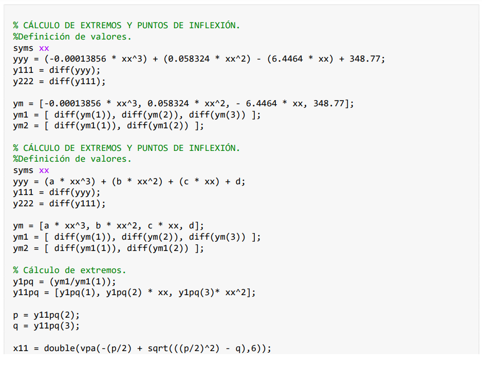 | 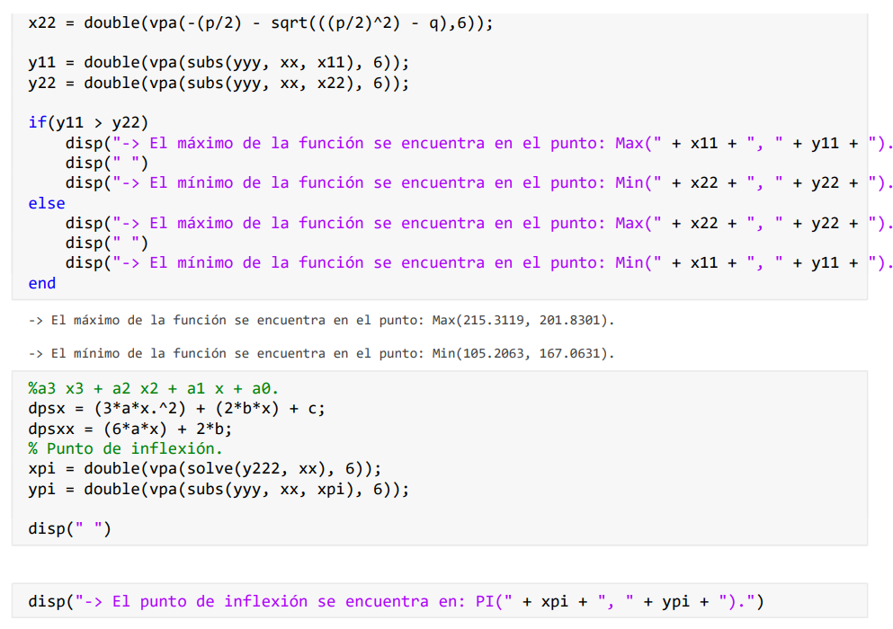 | 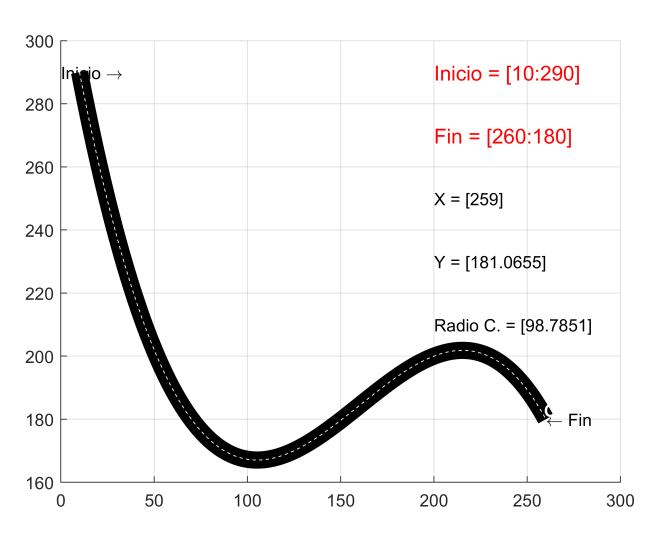 | 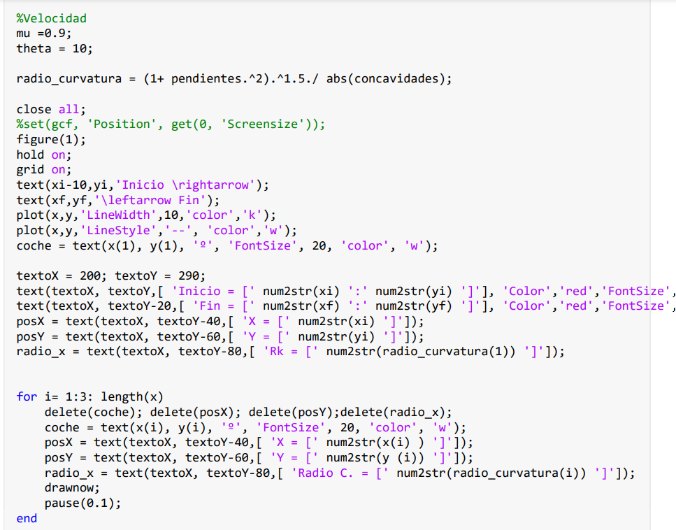 | 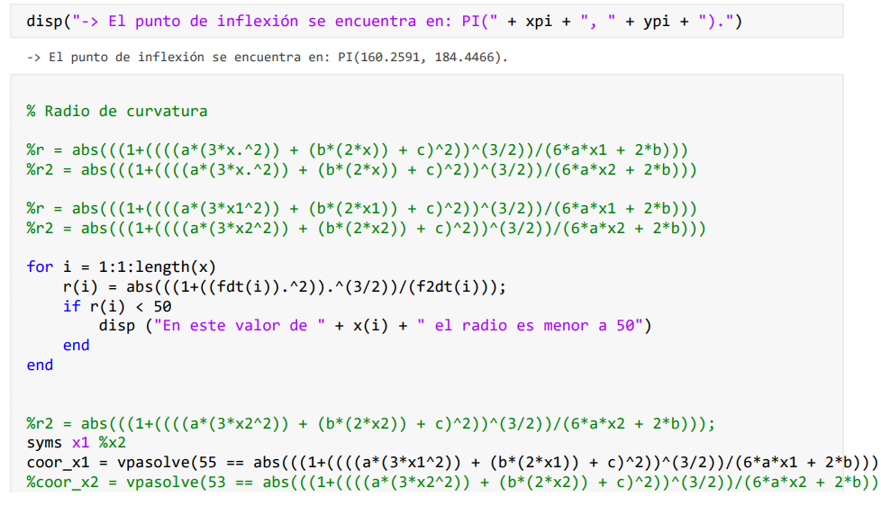 |
Ordenamientos de datosPara este trabajo, se programo diferentes metodos de estructuración de datos en C++, esto con la finalidad de ordenar varios archivos de texto, donde a partir de este se podria obtener todos los datos que se requieran encontrar considerando lo que se quiere encontra. ESte codigo fue realizado alrededor del 3 de diciembre del 2021 Las siguientes capturas muestar algunas partes del codigo. |
| 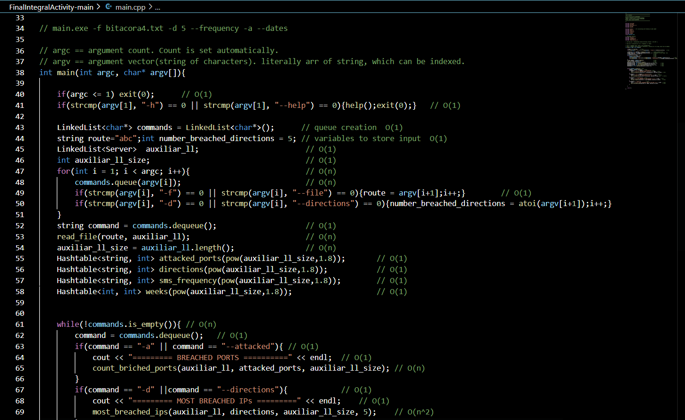 | 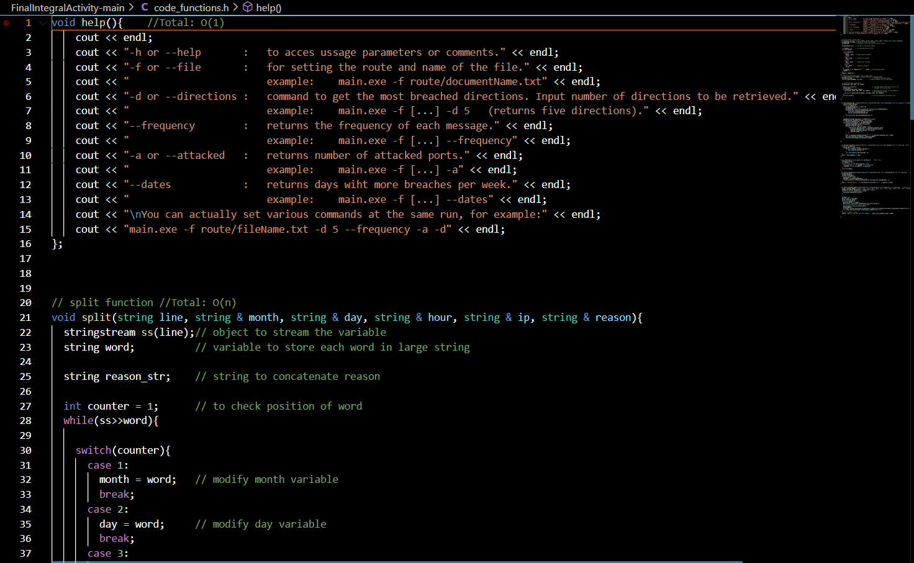 | 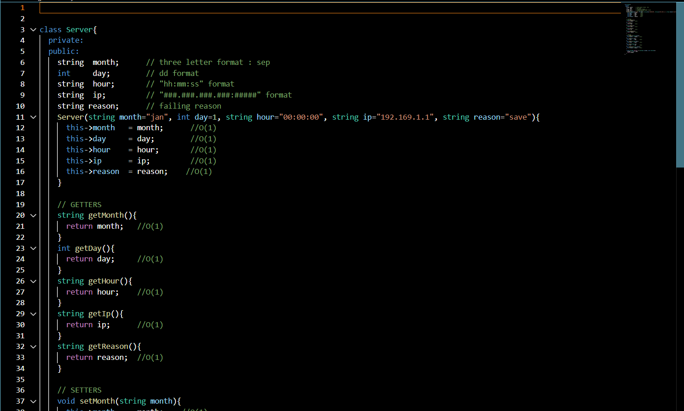 | 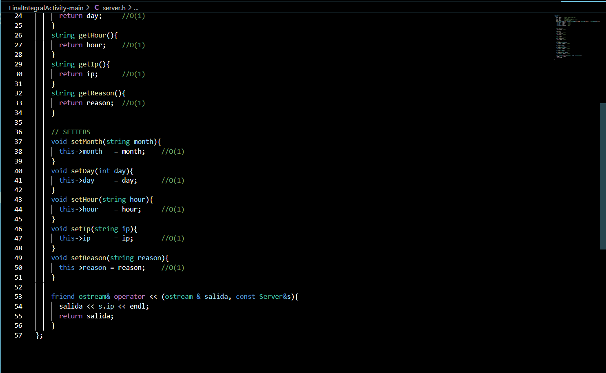 |
Top 5
|
Peliculas
|
videojuegos
|
Animes
|
Series
|